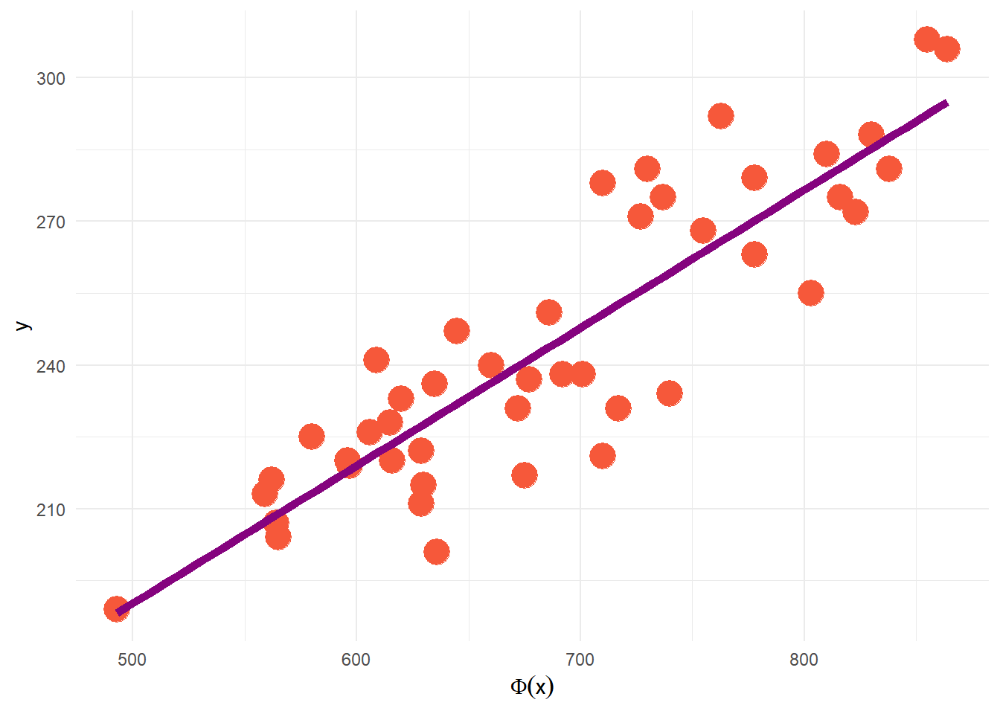

3 Regresión lineal simple

Para este modelo supondremos que nuestra respuesta, \(y\), es explicada únicamente por una covariable, \(x\).
Entonces, escribimos nuestro modelo como:
\[y^{(i)}=\beta_0+\beta_1x^{(i)}+\epsilon^{(i)},\ \ i=1,2,\dots,n\] Como podemos observar, se ha propuesto una relación lineal entre la variable \(y\) y la variable explicativa \(x\), que es nuestro primer supuesto sobre el modelo: La relación funcional entre \(x\) y \(y\) es una línea recta.
Observamos que la relación no es perfecta, ya que se agrega el término de error, \(\epsilon\). Dado que la parte aleatoria del modelo es la variable \(y\), asumimos que al error se le “cargan” los errores de medición de \(y\), así como las perturbaciones que le pudieran ocasionar los términos omitidos en el modelo. Gauss desarrolló este modelo a partir de la teoría de errores de medición, que es de donde se desprenden los supuestos sobre este término:
- \(\mathbb{E}(\epsilon^{(i)})=0\)
- \(\mathbb{V}ar(\epsilon^{(i)})=\sigma^2\)
- \(\mathbb{C}ov(\epsilon^{(i)},\epsilon^{(j)})=0, \ \forall i\neq j\)
N.B. Los errores \(\epsilon^{(i)}\) son variables aleatorias no observables.
3.1 Solución al problema de regresión lineal simple
3.2 Mínimos cuadrados ordinarios
En una situación real, tenemos \(n\) observaciones de la variable de respuesta así como de la variable explicativa, que conforman las parejas de entrenamiento \((x_i, y_i), \ i = 1, 2, ..., n\).
Entonces, nuestro objetivo será encontrar la recta que mejor ajuste a los datos observados.
Utilizaremos el método de mínimos cuadrados para estimar los parámetros del modelo, que consiste en minimizar la suma de los errores al cuadrado, esto es:
\[\sum_{i=1}^n \epsilon_i^2 = \sum_{i=1}^n(y_i-(\beta_0+\beta_1x^{(i)}))^2\] Al minimizar la expresión anteriore obtenemos las siguientes expresiones para los estimadores:
\[\hat{\beta_1}=\frac{\sum_{i=1}^ny_i(x_i-\bar{x})}{\sum_{i=1}^n(x_i-\bar{x})^2}\] \[\hat{\beta_0}=\bar{y}-\hat{\beta_1}\bar{x}\] Una desventaja del método de mínimos cuadrados, es que no se pueden hacer procesos de inferencia sobre los parámetros de interés \(\beta_0\) y \(\beta_1\); procesos como intervalos de confianza o pruebas de hipótesis.
Para subsanar esta deficiencia, es necesario asumir una distribución para el error, \(\epsilon_i\), que, siguiendo la teoría general de errores, se asume que tiene distribución normal, con media cero y varianza \(\sigma^2\).
Este supuesto garantiza que las distribuciones de \(y_i,\ \hat{\beta_0},\ \hat{\beta_1}\) sean normales, lo que permite tanto la construcción de intervalos de confianza como de pruebas de hipótesis.
N.B El estimador de \(\sigma^2\) está dado por \(\hat{\sigma^2}=\frac{\sum_{i=1}^n(y_i-\hat{y_i})^2}{n-2}\)
3.3 Pruebas de hipótesis
En el modelo de regresión lineal simple, la prueba de hipótesis más importante es determinar si estadísticamente existe la dependencia líneal entre \(x\) y \(y\), y que no sea producto del muestreo (debido al azar). Es decir, realizar la prueba de hipótesis:
\[H_0:\beta_1=0 \ vs.\ H_a:\beta_1\neq 0\] No rechazar la hipótesis nula, implicaría que la variable \(x\) no ayuda a explicar a \(y\) o bien que, tal vez, la relación entre estas variables no es lineal.
En este modelo, esta última explicación es un poco cuestionable, ya que se parte, de inicio, del diagrama de dispersión de los datos.
Si rechazamos la hipótesis nula, implicará que \(x\) es importante para explicar la respuesta \(y\) y que la relación lineal entre ellas puede ser adecuada.
Rechazar esta hipótesis nula, también podría implicar que existe una relación lineal entre las variables pero, tal vez, se pueda mejorar el ajuste con algún otro término no lineal.
3.4 Interpretación de los parámetros
Cuando se tiene una recta en el sentido determinista, los parámetros \(\beta_0\) y \(\beta_1\) tienen una interpretación muy clara; \(\beta_0\) se interpreta como el valor de \(y\) cuando \(x\) es igual a cero y \(\beta_1\) como el cambio que experimenta la variable de respuesta \(y\) por unidad de cambio en \(x\).
La interpretación, desde el punto de vista estadístico, de los parámetros estimados en el modelo de regresión es muy similar:
\(\hat{\beta_0}\) es el promedio esperado de la respuesta \(y\) cuando \(x = 0\) (este parámetro tendrá una interpretación dentro del modelo, si tiene sentido que \(x\) tome el valor cero, de lo contrario, no tiene una interpretación razonable) y
\(\hat{\beta_1}\) es el cambio promedio o cambio esperado en \(y\) por unidad de cambio en \(x\).